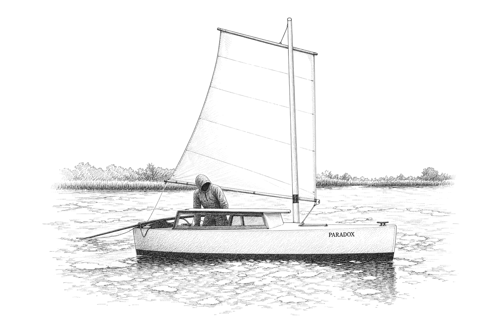

A guide to the Paradox sailboat
Second edition. Proof-reading draft, October 2026.
Every chapter can be read or heard: open it and press play. The narration keeps playing with the screen off and can be paused from the lock screen. 8 h 28 min in all.
To hear the whole book as one playlist, open it in Webamp, or load playlist.m3u8 in Winamp, VLC or another player.
Part One: The designer and his boats
Matt Layden, the four boats that taught him, the fifth that he kept, the Swede who came to see for himself, the race and the boats that followed.
- 1Matt Layden21 min
- 2Four boats before Paradox16 min
- 3Paradox9 min
- 4Sven Yrvind16 min
- 5The 2003 Everglades Challenge21 min
- 6Smaller and smaller24 min
Part Two: The boat
The boat met on her trailer and taken apart: chine runners, rudder, rig, ballast and the box that ties them together.
- 7Meeting a Paradox17 min
- 8What kind of boat she is11 min
- 9Chine runners34 min
- 10Rudder18 min
- 11Mast, rig and sail24 min
- 12Ballast and self-righting20 min
- 13Vent trunk8 min
Part Three: Building and sailing
How a Paradox is built, and how she is sailed and lived in. A reader who will never build one can go on to chapter 15.
Part Four: The fleet
What the fleet has done, the boats and the people who built them, how the boat has been changed and how the design survived without a company.
- 16What Paradoxes have done27 min
- 17Boats and the people who built them41 min
- 18Changing the boat35 min
- 19How the design survived without a company11 min